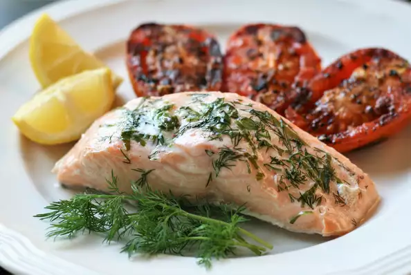

Citrus-Herbed Baked Salmon

Description
This is one of the most flavorful and moist salmon recipes I have ever tasted.
Ingredients
- 4 lemons, sliced 1/4-inch thick
- 1 large red onion, sliced
- 2 (8 ounce) salmon fillets
- 2 tablespoons chopped fresh basil
- 2 tablespoons chopped fresh dill
- ½ teaspoon sea salt
Steps
- Preheat oven to 350 degrees F (175 degrees C).
Put two large squares of aluminum foil onto a large,
flat work surface.
- Make a bed of lemon slices in the center of each foil
square; top with red onion. Lay a salmon fillet atop
each pile of lemon slices and onion; season with basil,
dill, and sea salt. Fold edges of the aluminum foil over
the salmon and seal completely.
- Bake in the preheated oven until the fish
flakes easily with a fork, about 25 minutes.
- Remove salmon from foil pouch, place on plate,
and drizzle juices from foil pouch over the fish.